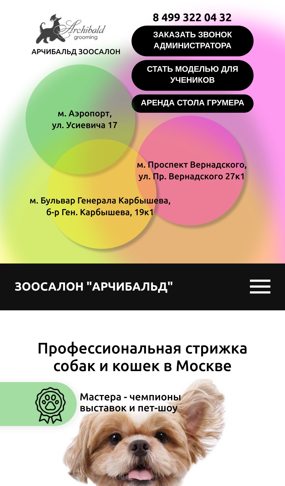
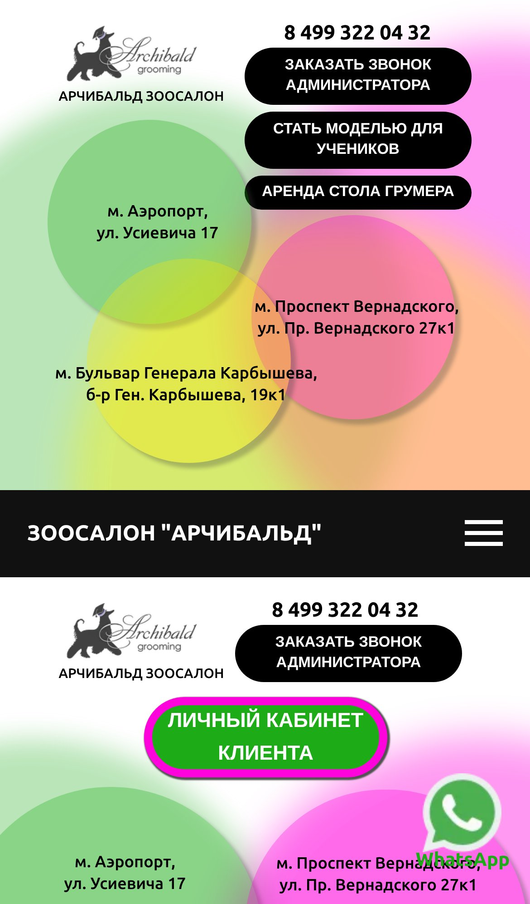
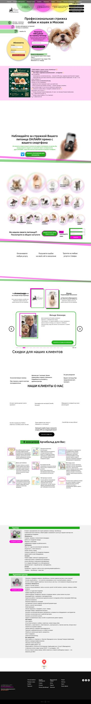

Мы посмотрели главную страницу и страницы пород на компьютере и телефоне. Ниже то, что сейчас мешает клиенту записаться и сайту получать трафик из Яндекса, и как это решит новая версия. Всё проверено на текущем сайте, без оценок «на глаз».
Сейчас: на главной нет кнопки онлайн-записи. На первом экране телефона кнопки «Заказать звонок», «Стать моделью для учеников» и «Аренда стола грумера». Запись через YCLIENTS есть только на страницах пород.
Сделаем: кнопка записи на каждом экране, с выбором салона и сразу в нужный филиал YCLIENTS.
Сейчас: цены на 20+ отдельных страницах пород, внутри зависят от веса питомца. Общего поиска нет, свою породу нужно искать по картинкам.
Сделаем: один каталог на 460 позиций: ввёл породу, выбрал вес, увидел цену и кнопку записи.
Сейчас: на одной странице перемешаны клиенты, вакансии, академия, модели для учеников и аренда стола грумера.
Сделаем: вынесем вакансии, академию и аренду в отдельный раздел, чтобы не отвлекать клиентов от записи.
Сейчас: главная около 11 000 px на компьютере и примерно 20 экранов на телефоне, код главной весит около 1 МБ.
Сделаем: оставим суть: услуги, цены, салоны, запись, отзывы. Облегчим загрузку на мобильном интернете.
Сейчас: на страницах пород шапка повторяется дважды: в первой три салона, во второй два. В ссылках два разных телефона, у акций разные условия для разных салонов.
Сделаем: одна шапка, три салона с адресами, телефонами и картой, понятные условия акций.
Сейчас: ни на главной, ни на странице шпица нет заголовка H1. Описание главной в поиске повторяет заголовок. У 76 из 81 изображения на главной нет описаний (alt).
Сделаем: H1, заголовки и описания на всех страницах, описания изображений, Метрика с целями на запись и заявки.

Главная, первый экран телефона. Кнопки для учеников и грумеров, кнопки записи нет.

Страница породы на телефоне. Шапка повторяется дважды, во второй только два салона из трёх.

Главная целиком на компьютере. Около 11 000 px.
В карте сайта 27 страниц, из них около 20 страниц пород, по которым сайт находят в поиске («стрижка шпица Москва» и т. п.). Для каждой настроим постраничную переадресацию (301) на новый адрес, чтобы не потерять накопленные позиции.